原156＋真实事件50，共206场，0拟合。复用已有RELATIVE23模型，128树同叶比例作空间四邻图边权，沿用联合材料种子及软锚；只仲裁COMPACT新增扣量。六个继承固定检查加大庆/阳泉固定夏季定位场。每场各法同RAW色限、同原支持。
结果与局限 · 冻结机制 · 必要指标 · 固定位置与极值结果
三址图倾向极差降低；原30平均新增扣量略弱于VISIBLE，地图道路平均保护相近。保留并列，不替换默认。
旧GRAPH剩余新增扣量 0.828 → 森林同叶 0.836 μg/m³；实际PM变化 -0.008。
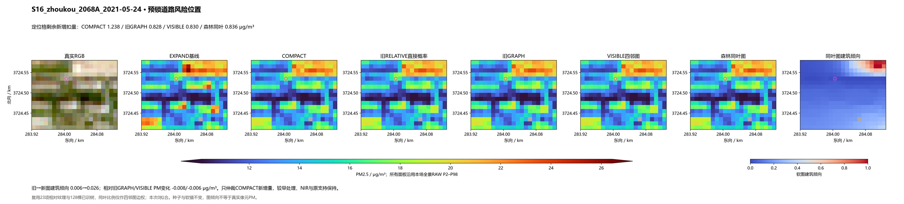
旧GRAPH剩余新增扣量 0.137 → 森林同叶 0.114 μg/m³；实际PM变化 +0.022。
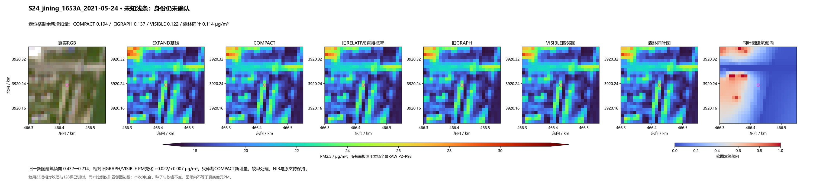
旧GRAPH剩余新增扣量 1.505 → 森林同叶 1.461 μg/m³；实际PM变化 +0.044。
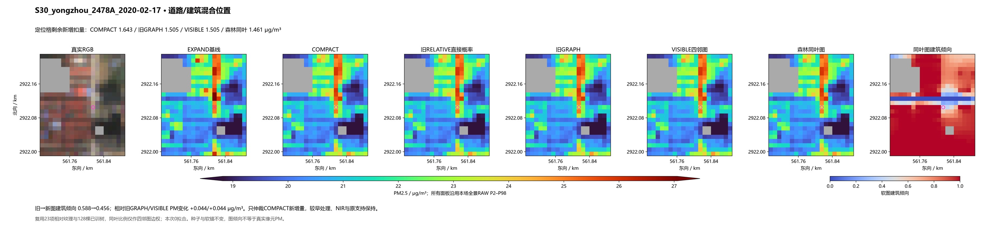
旧GRAPH剩余新增扣量 0.674 → 森林同叶 0.766 μg/m³；实际PM变化 -0.092。
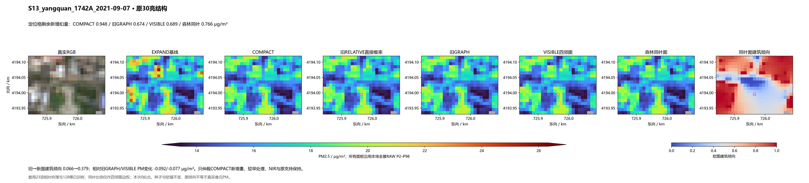
旧GRAPH剩余新增扣量 0.612 → 森林同叶 0.611 μg/m³；实际PM变化 +0.001。
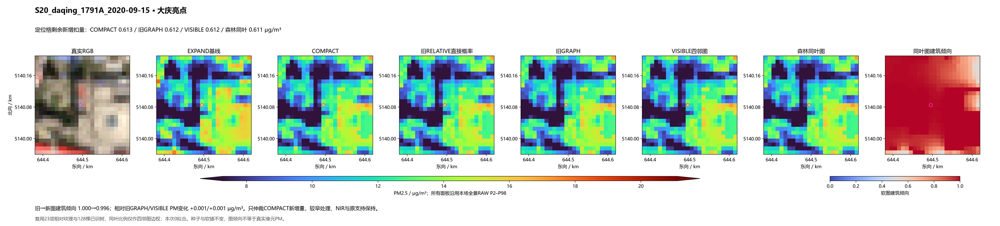
旧GRAPH剩余新增扣量 0.245 → 森林同叶 0.245 μg/m³；实际PM变化 +0.000。
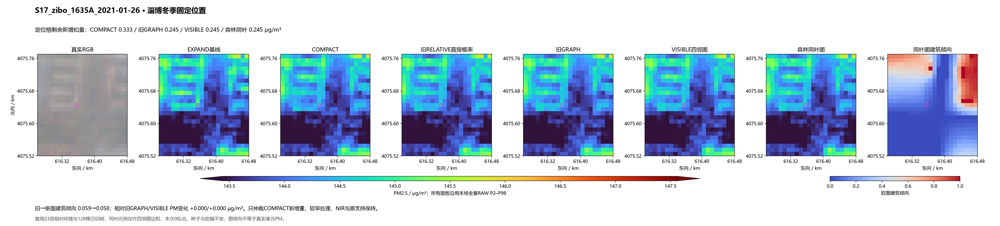
旧GRAPH剩余新增扣量 0.422 → 森林同叶 0.558 μg/m³；实际PM变化 -0.137。
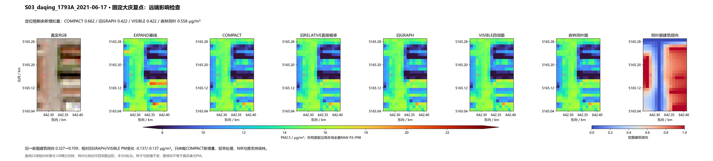
旧GRAPH剩余新增扣量 0.348 → 森林同叶 0.352 μg/m³；实际PM变化 -0.004。
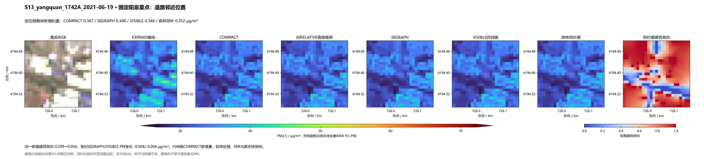
相对VISIBLE的实际PM变化 -0.212209 μg/m³。事后检查，不参与机制或标签。
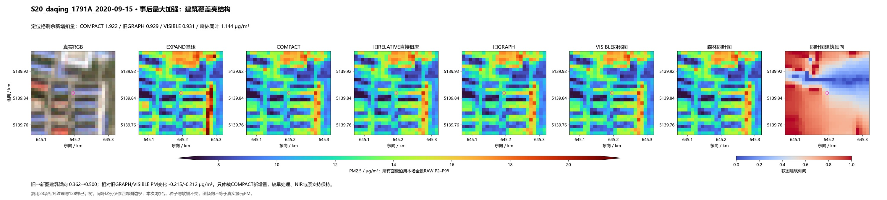
相对VISIBLE的实际PM变化 -0.151934 μg/m³。事后检查，不参与机制或标签。
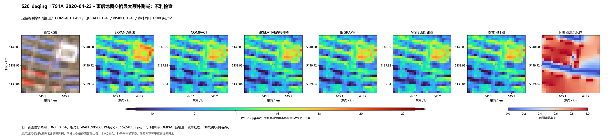
相对VISIBLE的实际PM变化 +0.237148 μg/m³。事后检查，不参与机制或标签。
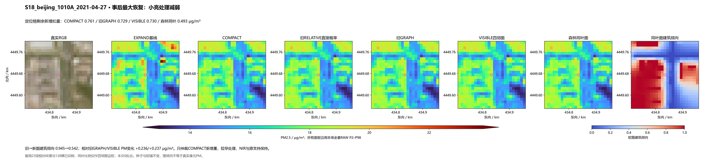
相对VISIBLE的实际PM变化 -0.185516 μg/m³。事后检查，不参与机制或标签。
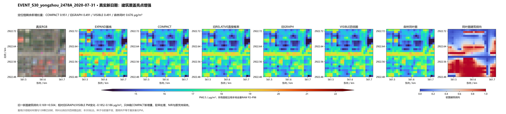
相对VISIBLE的实际PM变化 -0.070187 μg/m³。事后检查，不参与机制或标签。
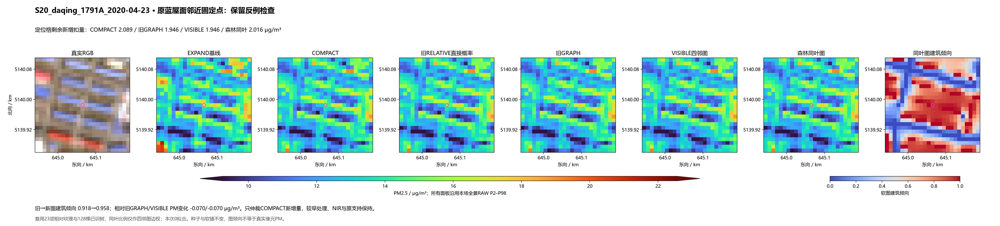
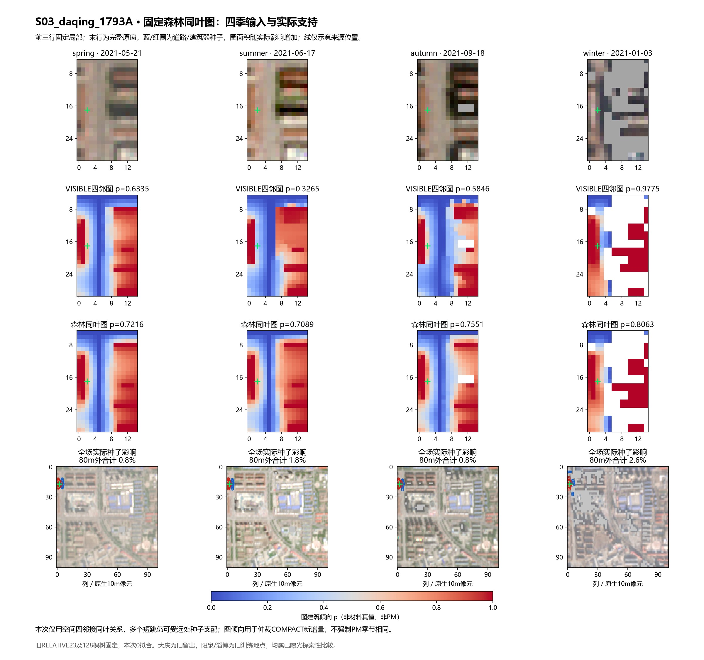
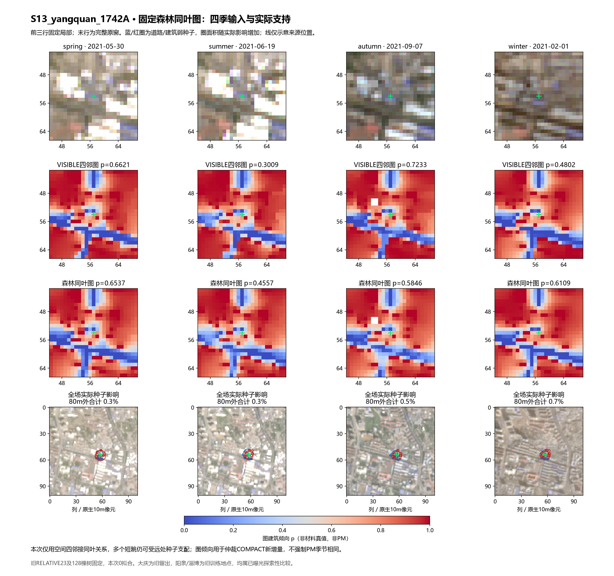
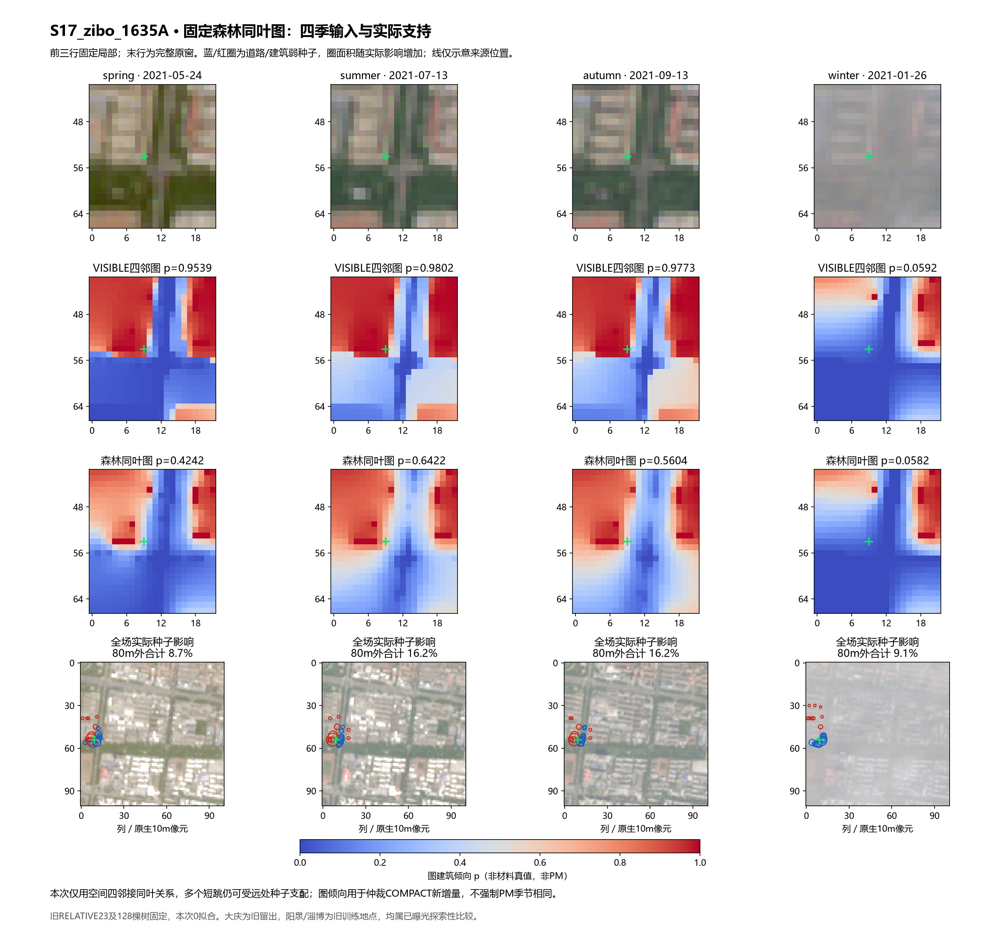